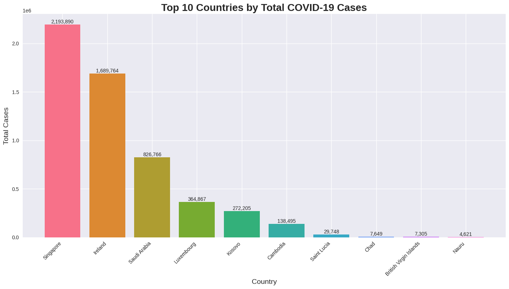
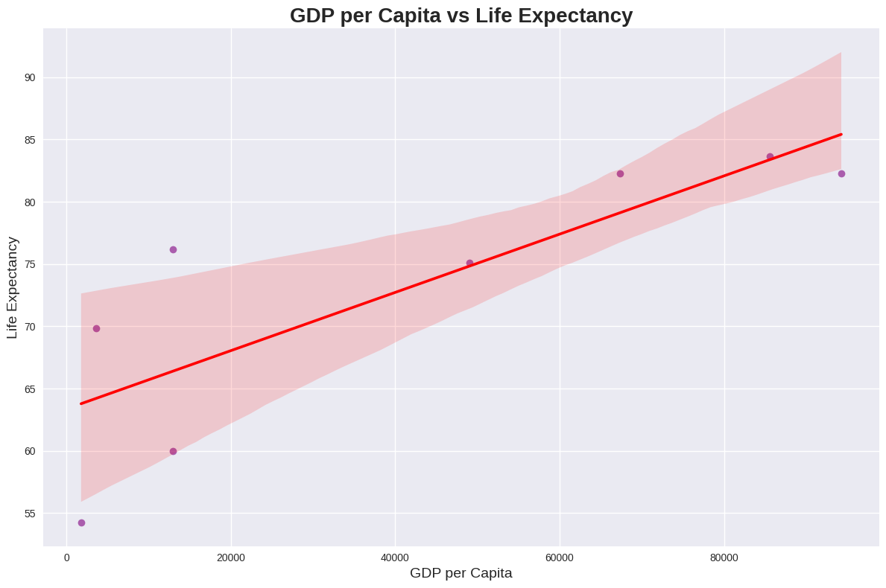
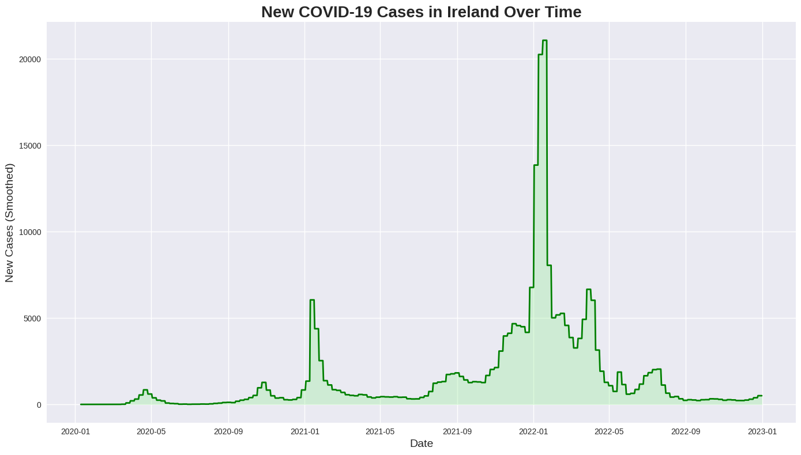
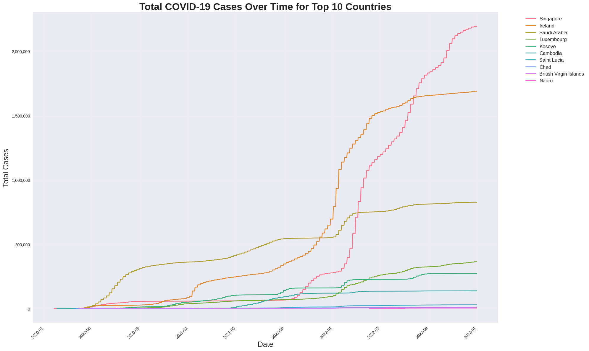

COVID-19 Analysis: Ireland and 9 other nations
Introduction
The COVID-19 pandemic has had an unprecedented impact on global health, economics, and society. This report aims to analyze and visualize key aspects of the pandemic’s progression and its relationship with socio-economic factors across different countries, with a particular focus on Ireland. Using data from comprehensive COVID-19 datasets, we explore several crucial dimensions.
1. GDP per capita by Country (World Map):
![]images/world_map.png)
This world map shows GDP per capita across different countries. The color scale ranges from yellow (lower GDP) to red (higher GDP). We can see that only a few countries are colored, likely representing the top economies or those with available data. Saudi Arabia stands out in orange, indicating a relatively high GDP per capita. There’s a small red area in Europe, possibly representing a wealthy nation like Luxembourg or Switzerland. The lack of data for most countries limits our ability to make global comparisons, but it does highlight the economic strength of certain nations.
2. Top 10 Countries by Total COVID-19 Cases (Bar Chart):

This bar chart displays the top 10 countries by total COVID-19 cases. Surprisingly, Singapore leads the chart with over 2 million cases, followed closely by Ireland with about 1.7 million cases. Saudi Arabia is third with around 800,000 cases. What’s intriguing is the presence of smaller nations like Luxembourg, Kosovo, and Saint Lucia in this top 10 list. This suggests that the data might be showing total cases relative to population size rather than absolute numbers, or it could be reflecting differences in testing and reporting practices among countries.
3. GDP per Capita vs Life Expectancy (Scatter Plot):

This scatter plot shows a clear positive correlation between GDP per capita and life expectancy. As GDP per capita increases, life expectancy tends to rise as well. The relationship appears to be non-linear, with life expectancy gains slowing at higher GDP levels. There’s considerable variation, especially at lower GDP levels, suggesting that factors other than wealth also influence life expectancy. The blue shaded area represents the confidence interval, which widens at the extremes where there are fewer data points.
4. New COVID-19 Cases in Ireland Over Time (Line Chart):

This line chart tracks new COVID-19 cases in Ireland from early 2020 to early 2023. We can see several distinct waves of infection. The largest peak occurs around January 2022, with new cases reaching over 20,000 per day. There are also notable spikes in January 2021 and July 2021. The pattern shows how the pandemic evolved in Ireland, with periods of relative calm followed by sudden surges. By late 2022, the number of new cases had decreased significantly, possibly due to vaccination efforts and improved management strategies
5. Total COVID-19 Cases Over Time for Top 10 Countries (Line Chart):

This multi-line chart compares the cumulative COVID-19 cases for the top 10 affected countries over time. Singapore and Ireland stand out with the steepest curves, indicating rapid case accumulation. Saudi Arabia follows as the third highest. Most other countries show more gradual increases. Interestingly, some countries like Chad and Nauru have very flat lines, suggesting either very low case numbers or limited reporting. The chart reveals how different countries experienced the pandemic at different rates and intensities, possibly reflecting variations in population density, public health measures, and testing capabilities.
These visualizations illustrate the multifaceted nature of the COVID-19 pandemic and its interplay with economic factors. Wealthier nations, reflected by higher GDP per capita, generally exhibit longer life expectancies but also often report more COVID-19 cases. This pattern may result from superior testing and reporting capabilities rather than inherently higher infection rates.
The pandemic’s trajectory differed markedly across countries. Some experienced severe spikes in cases, while others managed to keep numbers relatively low. Ireland’s journey, marked by distinct waves of infection, mirrors the struggles many nations faced in containing the virus over time.
It’s crucial to recognize that total case numbers only tell part of the story. Variables like population size, testing rates, and reporting practices significantly influence these figures. The presence of smaller nations in the top 10 list indicates that per capita rates can offer a different perspective on the pandemic’s impact.
The data highlights the global scope of the pandemic, affecting countries regardless of economic status, while also emphasizing the potential connection between economic resources and both health outcomes and the ability to respond to the pandemic effectively.